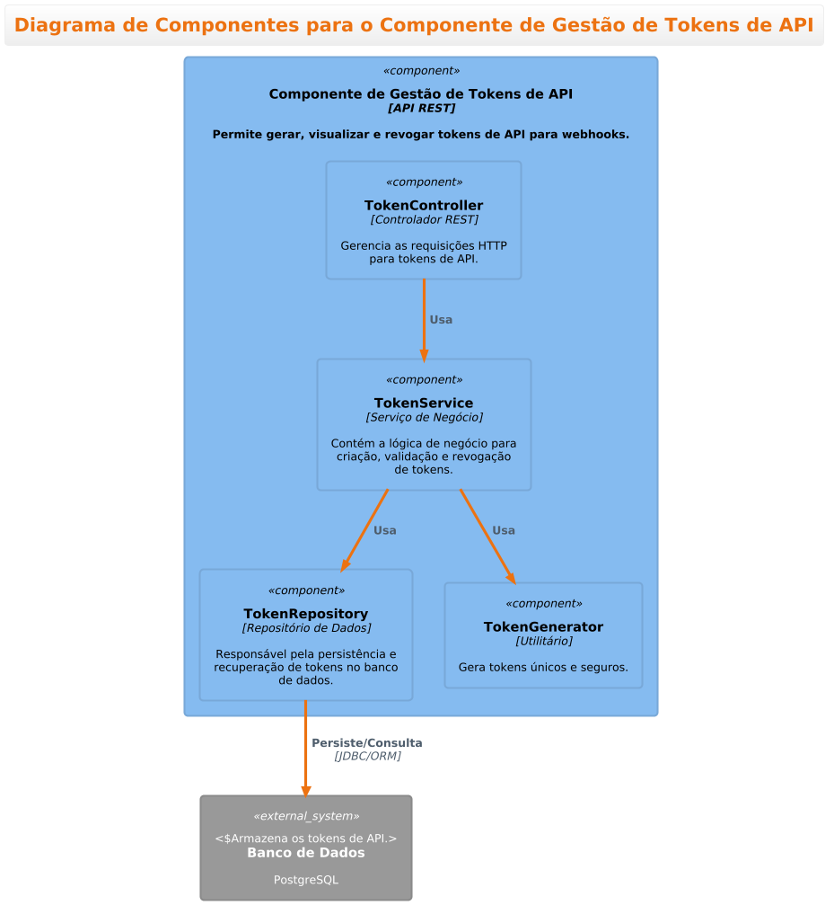

Documento de Funcionalidades do Portal Web
Este documento descreve as funcionalidades planejadas para o portal web, que será utilizado pelas concessionárias. O portal será desenvolvido como um microserviço, conforme o ADR-001.
1. Autenticação e Gestão de Acessos
Para detalhes sobre a gestão de tokens de API, consulte o diagrama de componentes específico:
Diagrama de Componentes para o Componente de Gestão de Tokens de API (PUML)

F-001: Login de Usuário * Os usuários das concessionárias poderão fazer login no portal usando um e-mail e senha. * O sistema deve incluir uma funcionalidade de "Esqueci minha senha".
F-002: Gestão de Tokens de API * Cada concessionária terá uma área de administração onde poderá gerar, visualizar e revogar tokens de API. * Esses tokens serão usados para autenticar as chamadas de webhook do CRM da concessionária para a plataforma de integração, garantindo que apenas fontes autorizadas possam enviar dados.
F-003: Controle de Acesso Baseado em Papel (RBAC) * O sistema suportará pelo menos dois papéis de usuário: * Admin da Concessionária: Pode gerenciar usuários, visualizar todos os leads/oportunidades da sua concessionária e gerenciar tokens de API. * Usuário Padrão: Pode visualizar os leads/oportunidades que lhe foram atribuídos.
2. Visualização de Dados
F-004: Dashboard de Leads e Oportunidades * A página inicial após o login será um dashboard que exibe uma visão geral dos leads recebidos e o status atual das oportunidades. * Os dados serão apresentados em formato de lista ou kanban, permitindo uma visualização clara do funil de vendas.
F-005: Filtragem e Busca * Os usuários poderão filtrar a lista de leads/oportunidades por status, data de criação, vendedor responsável, etc. * Uma funcionalidade de busca permitirá encontrar rapidamente um lead ou oportunidade específica.
F-006: Detalhes da Oportunidade * Ao clicar em um item, o usuário poderá ver uma tela de detalhes com todas as informações do lead/oportunidade, incluindo o histórico de atualizações de status. * Esta tela exibirá o status de sincronização, indicando se a informação foi enviada com sucesso para a montadora.
3. Documentação de API
F-007: Portal de Documentação * O portal web incluirá uma seção dedicada à documentação das APIs de integração. * A documentação explicará como configurar os webhooks nos CRMs das concessionárias, qual o formato esperado dos payloads e quais os endpoints a serem chamados. * Idealmente, esta documentação será gerada automaticamente a partir de uma especificação OpenAPI (Swagger).
4. Relatórios (Funcionalidade Futura)
F-008: Relatórios de Performance * Em uma fase futura, o portal poderá oferecer relatórios básicos sobre a taxa de conversão de leads, tempo médio por estágio do funil, etc., para ajudar as concessionárias a analisar sua performance.